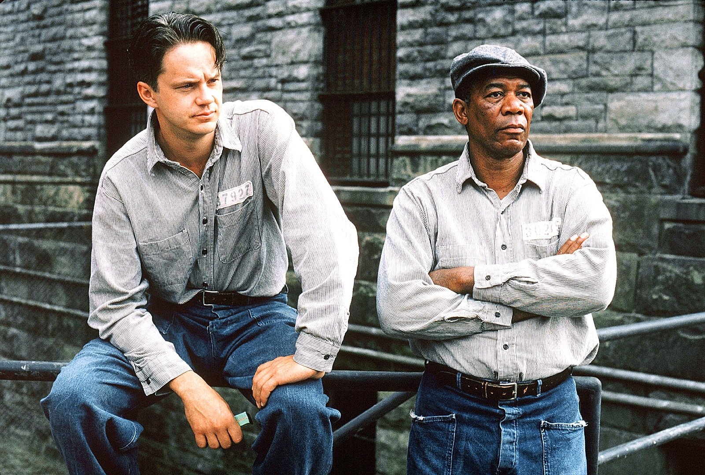

| Poradie | Názov filmu | Rok vydania | Hodnotenie v percentách |
|---|---|---|---|
| 1. | Vykoupení z věznice Shawshank | 1994 | 95,3 % |
| 2. | Forrest Gump | 1994 | 94,5 % |
| 3. | Zelená míle | 1999 | 92,9 % |
| 4. | Přelet nad kukaččím hnízdem | 1975 | 92,5 % |
| 5. | Sedm | 1995 | 92,4 % |
| 6. | Schindlerův seznam | 1993 | 92,3 % |
| 7. | Kmotr | 1972 | 91,8 % |
| 8. | Dvanáct rozhněvaných mužů | 1957 | 91,8 % |
| 9. | Nedotknutelní | 2011 | 91,3 % |
| 10. | Pelišky | 1999 | 91,2 % |
| 11. | Terminátor 2: Den zúčtování | 1991 | 90,9 % |
| 12. | Pulp Fiction: Historky z podsvětí | 1994 | 90,7 % |
| 13. | Kmotr | 1974 | 90,8 % |
| 14. | Pán prstenů: Společenstvo Prstenu | 2001 | 90,5 % |
| 15. | Pán prstenů: Návrat krále | 2003 | 90,5 % |
| 16. | Mlčení jehňátek | 1991 | 90,5 % |
| 17. | Tenkrát na Západě | 1968 | 90,5 % |
| 18. | Temný rytíř | 2008 | 90,3 % |
| 19. | Gran Torino | 2008 | 90,3 % |
| 20. | The Matrix | 1999 | 90,2 % |
Mladý bankéř Andy Dufresne byl v roce 1947 odsouzen za vraždu manželky a jejího milence. Přesto, že tento čin popírá, čeká na něj doživotní trest v obávané věznici Shawshank. Postupem času si tam svými schopnostmi získá všeobecný respekt a s černochem Redem, zdejším obchodníkem, který je schopen sehnat vše, naváže dlouholeté přátelství. Andy nenápadně pracuje na zlepšení krutých poměrů ve vězení a stane se nepostradatelný jako daňový a finanční poradce strážců. S pomocí fiktivního tichého společníka začne prát řediteli věznice špinavé peníze. Zdánlivý poklid naruší nový vězeň, jehož svědectví dokazuje Andyho nevinu. Ten chce okamžitě obnovit svůj proces, ale narazí na tvrdý odpor ředitele...